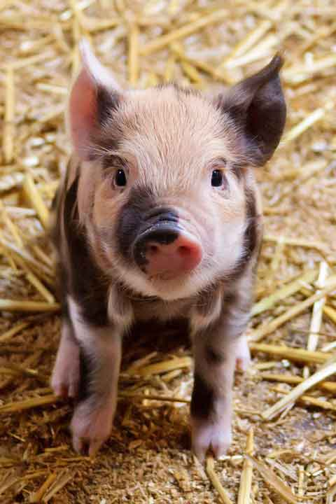
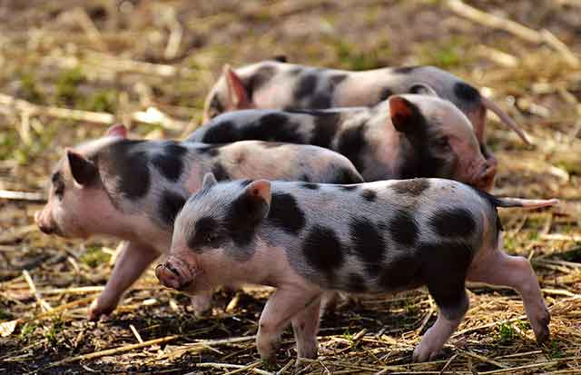
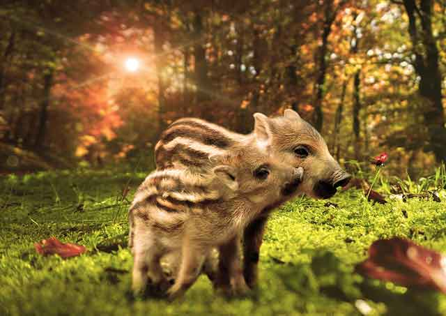
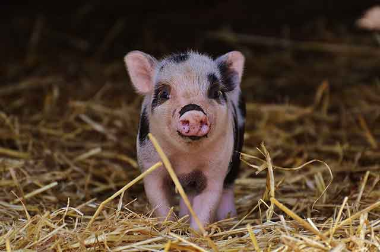
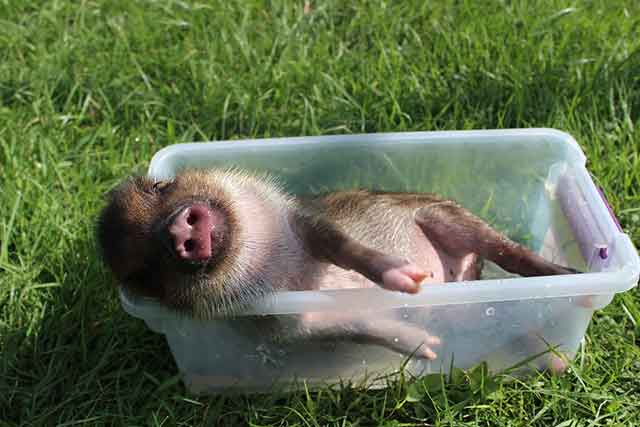

가정에서 기르는 미니돼지! 종류에 대해 알아봐요.
얼마 전 동물 관련 TV 프로그램에서 돼지를 기르는 분이 나왔어요. 돼지를 가정에서 키운다니! 놀라웠지만, 알고 보니 미니 돼지를 집에서 기르는 분들이 생각보다 많더군요.
이런 열풍은 "꼬마 돼지 베이브"라는 영화가 나오기 시작부터라고 합니다. 이미 미국에서는 상당히 인기 있는 반려동물이라고 해요. 상대적으로 우리나라에서는 잘 알려진 반려동물은 아닙니다. 아직은 돼지를 키운다는 게 익숙하지는 않으니까요. 만약 가정에서 미니돼지를 기르고 싶다면, 어떤 종류가 있는지 알아볼게요!
우선 미니돼지는 일반 돼지에 비해 크기가 작습니다. 그래서 가정에서 키울 수 있죠. 돼지는 지능이 높다고도 잘 알려졌죠. 대소변도 잘 가리는 편이고요.
미니돼지의 종류는 굉장히 다양합니다. '포트벨리' 종이 있으며, 각각의 나라마다 조금씩 특성이 다릅니다. 괴팅겐 미니피그, 댄디 익스트림, 로열 댄디 등 다양한 품종이 있습니다. 많은 분이 키우는 미니돼지는 베트남 포트벨리와 뉴질랜드 쿠네쿠네라고 합니다.
1) 베트남 포트벨리
일반적으로 인터넷이나 TV에서 가장 많이 보이는 종이 아닐까 싶습니다. 흰 피부에 검은색 얼룩무늬가 있는 종을 보셨다면, 베트남 포트밸리일 가능성이 큽니다.
다리가 짧고 통통하고 주둥이가 동글동글한 편입니다. 식물 뿌리나 열매, 곤충 등을 먹습니다.
2) 뉴질랜드 쿠네쿠네
털이 짧고 부드러운 것이 특징입니다. 보통 방목하며 자라지만, 기후 적응력이 좋아 가정에서도 키우는 편입니다. 베트남 포트밸래와 같이 수명은 12~15년 정도이지만, 돼지는 어떻게 잘 자라느냐에 따라서 20년 이상 사는 돼지도 있다고 합니다.
미니 돼지는 개량된 품종으로 작고 귀엽다고 생각하기 쉽지만, 얼마만큼 크는지는 가늠하기 힘들 수 있습니다. 덩치가 좋은 미니돼지는 100kg 이상 나갈 수 있습니다. 우리가 흔히 알고 있는 이미지처럼 많이 먹고 먹는 만큼 성장합니다.
돼지의 신체적 특성을 이해하는 것도 중요합니다. 땀샘이 없는 돼지는 여름철 관리가 중요합니다. 더위로 인해 열사병에 걸릴 수 있으므로 열을 식혀주고 더위에서 벗어날 수 있도록 도와주어야 합니다.
미니 돼지의 후각은 뛰어나지만, 시력은 안 좋은 편입니다. 후각의 능력은 인간과 비교하면 몇십 배라고 하며, 시력은 약해 멀리 보는 일이 없다고 합니다.
무엇보다 돼지는 IQ가 높은 편이라서 주인은 알아보고 콜링 훈련도 가능합니다. 우리가 생각하던 돼지의 이미지와는 다소 다르지만, 똑똑한 지능 덕분에 함께 하면 즐거움이 더욱더 커지는 반려동물이라고 합니다.
어떤 반려동물이든 한 번 키우기로 했다면, 끝까지 책임지고 기르는 것이 중요합니다. 미니돼지의 특성을 잘 이해하고 책임감 있게 기를 수 있을지를 신중히 결정한 후에 반려동물로 입양하는 것이 좋겠죠?
[출처] 가정에서 기르는 미니돼지! 종류에 대해 알아봐요. ｜ 작성자 우리집 사고뭉치